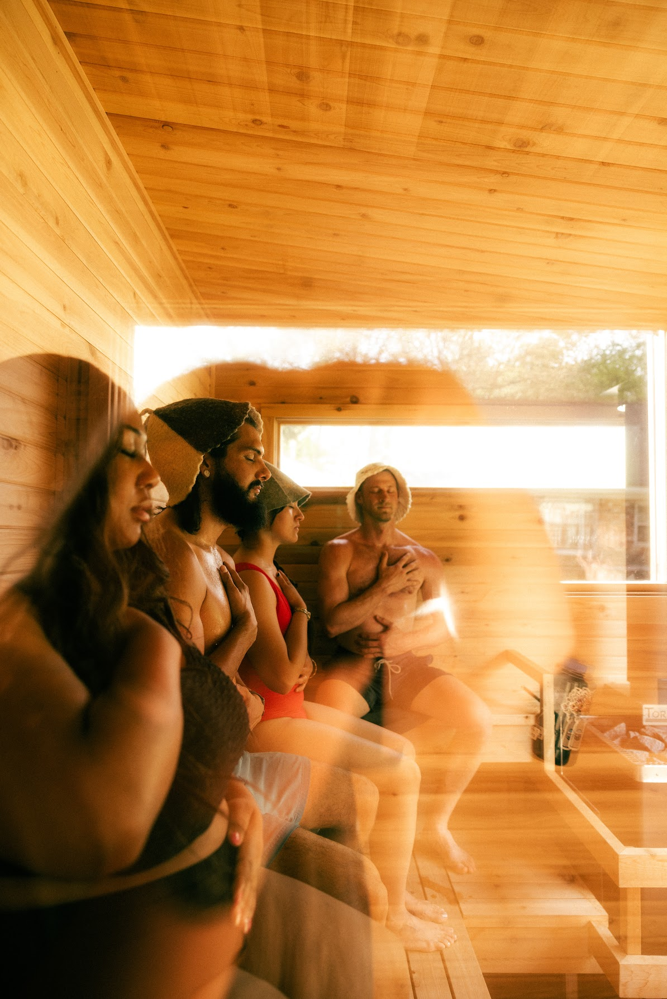
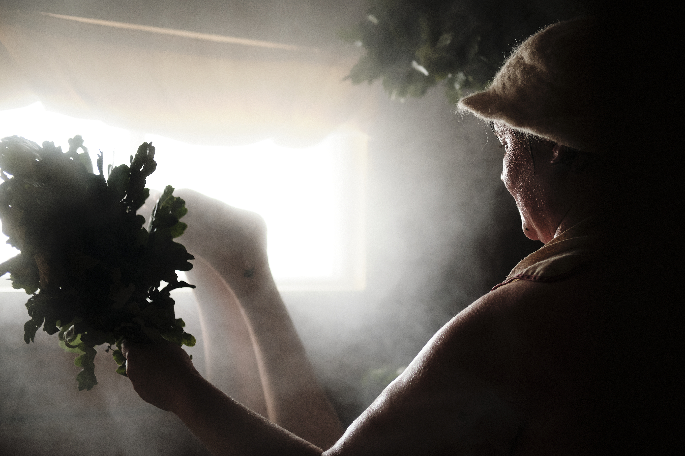
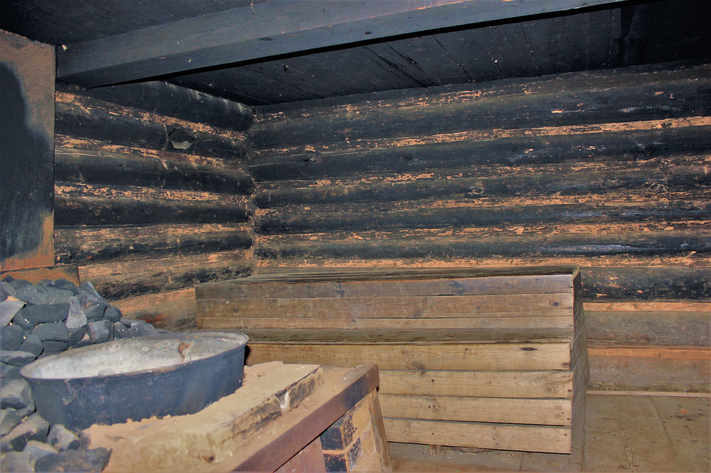
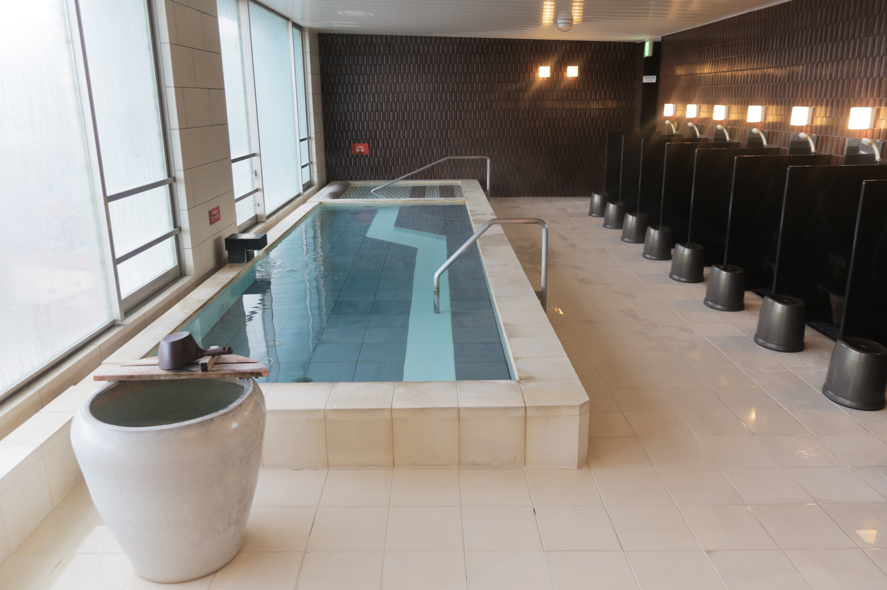
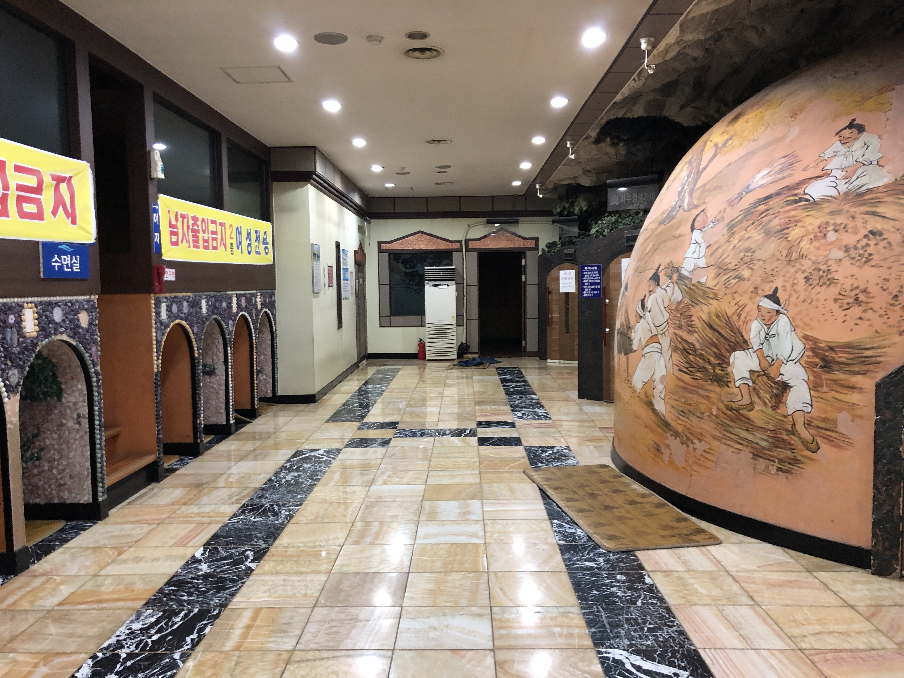
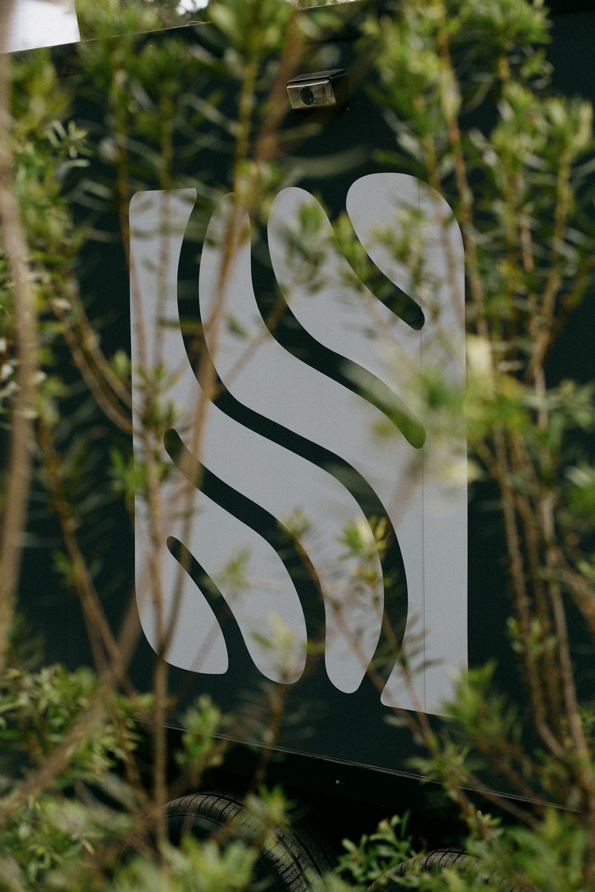

A practice as old
as people.
Hot water. Cold water.
A bench, in every culture that ever lived.

Hot water. Cold water.
A bench, in every culture that ever lived.

The steam off the stones.
Two million saunas. Five million Finns.
"Sauna is the poor
man's pharmacy."

A wood-fired room.
A bundle of oak leaves, the venik.
A friend swatting the heat into your shoulders.
"The banya is your
second mother."

Public baths for more than a thousand years.
Hierarchy washes off in the water.
"Hadaka no tsukiai.
Naked communion."

Hot floors. Salt rooms. Sleeping pads.
Families stay the whole weekend.
"정 (jeong). The bond
that grows in shared time."

Same fire. Same water.
Same bench, with one open seat.